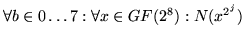
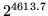
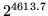
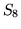
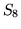

Next: Conclusions Up:
Mercy: a fast
large Previous: Description
of Mercy
Subsections
Existing approaches to large block ciphers use a few strong rounds based on existing cryptographic primitives. These ciphers cannot achieve speeds better than half that of the fastest block ciphers [2] or a third of the fastest stream ciphers [1]. Current block cipher speeds don't approach the needs of the design goals even before the extra penalties for doubling up, while those solutions based on stream ciphers pay a heavy penalty in key scheduling overhead that puts their speeds well below those needed.
Mercy addresses this by using more rounds of a weaker function. This makes more efficient use of the work done in earlier rounds to introduce confusion in later rounds, and is closer to a traditional block cipher approach drawn across a larger block. It also draws more state between disparate parts of the block, protecting against the certificational weaknesses identified in Section 2.
Balanced Feistel networks are certainly the best studied frameworks from which to build a block cipher, although I know of no prior work applying them to such large block sizes. They allow the design of the non-linear transformations to disregard efficiency of reversal and provide a familiar framework by which to analyse mixing. Balanced networks seem better suited to large block ciphers than unbalanced networks, since an unbalanced network is likely to have to do work proportional to the larger of the input and output data width.
Feistel ciphers normally omit the final swap, so that decryption has the same structure as encryption. However, Mercy implementations will typically encrypt blocks in-place, and the cost of having an odd number of swaps (forcing a real swap) would be high, so the last swap is not omitted.
Mercy's round function, while weaker than those used in [1], is considerably stronger than that of traditional Feistel ciphers, necessitating many fewer rounds. The larger block size allows more absolute work to be done in each round, while keeping the work per byte small.
The function  used in building the
box is that used for nonlinear
subsitution in [7]; it
is bijective and has known good properties against linear and
differential cryptanalysis, such as low LCmax and DCmax in the
terminology of [13]. We
use this function to build known good key-dependent bijective
substitutions using an extension of the technique outlined in
[4]; however, rather
than a simple XOR, the
mappings before and after
used in building the
box is that used for nonlinear
subsitution in [7]; it
is bijective and has known good properties against linear and
differential cryptanalysis, such as low LCmax and DCmax in the
terminology of [13]. We
use this function to build known good key-dependent bijective
substitutions using an extension of the technique outlined in
[4]; however, rather
than a simple XOR, the
mappings before and after  are
drawn at random from the entire space of bijective affine
functions on , of which
there are approximately
, by determining first the constant term and then drawing candidate basis values from
the CPRNG to find a linearly independent set. Because the functions are affine, the LCmax
and DCmax of the composite function (and
siblings) will be the same as those of
are
drawn at random from the entire space of bijective affine
functions on , of which
there are approximately
, by determining first the constant term and then drawing candidate basis values from
the CPRNG to find a linearly independent set. Because the functions are affine, the LCmax
and DCmax of the composite function (and
siblings) will be the same as those of  itself. The composite functions will also be
bijective since each of the components are, and hence all the
bytes in each column of the table
will be distinct.
itself. The composite functions will also be
bijective since each of the components are, and hence all the
bytes in each column of the table
will be distinct.
However, there are fewer possible composite functions than
there are pairs . In fact for
each possible composite function, there are pairs which generate it. This
follows from the following two properties of  :
:
|
|
|||
|  |
|
Since both multiplication and squaring in  are linear (and hence affine) in
are linear (and hence affine) in  (squaring because in a
field of characteristic 2, ), both
of these properties provide independent ways of mapping from
any pair to pairs which will
generate the same composite function, distinct in every case
except . Taking this into
account, the number of distinct composite functions possible is
approximately , and there
are functionally distinct
keys in total (considering
as well as ).
(squaring because in a
field of characteristic 2, ), both
of these properties provide independent ways of mapping from
any pair to pairs which will
generate the same composite function, distinct in every case
except . Taking this into
account, the number of distinct composite functions possible is
approximately , and there
are functionally distinct
keys in total (considering
as well as ).
Little attention has been paid to either the time or memory requirements of the key schedule, since key scheduling will be very infrequent and typically carried out in user space.
As with [21], this operation is bijective, since from the least significant byte of the output the input to the box can be inferred. We differ from [21] in using the most significant byte for the lookup rather than the least; this slightly improves the mixing gained from addition and seems to be very slightly faster on the author's machine.
A key-dependent state machine is an efficient way to bring about strong dependencies between widely separated parts of the block; since the state machine is reversible, changing a given input word guarantees that every subsequent state will be different and makes it slightly more likely than chance that every output word will be different.
The basis of the state machine is 32 parallel four-stage LFSRs based on the polynomial . The input to each LFSR is provided by a nonlinear mixing chain based on carry bits from other LFSRs and taps into the state which are then fed into Operation M after addition-based mixing with the input. The use of an LFSR ensures that any pair of distinct inputs of the same length which leave the LFSR in the same state must be at least 5 words long.
Every box lookup depends on the
previous lookup, even across rounds. This goes against the
design principles outlined in [18,5] which suggest that
ciphers should be designed to make best use of the parallelism
that modern processors can achieve, and to be wary of the
memory latency of table lookups. A variant on  which allows several box
lookups to take place in parallel by taking taps from later in
the LFSR is easy to construct, but surprisingly did not result
in any speed improvements on the target platform. Ciphers
similar to Mercy which use this technique to improve
parallelism may be appropriate for other architectures.
which allows several box
lookups to take place in parallel by taking taps from later in
the LFSR is easy to construct, but surprisingly did not result
in any speed improvements on the target platform. Ciphers
similar to Mercy which use this technique to improve
parallelism may be appropriate for other architectures.
Since the Feistel rounds use XOR mixing,  is also designed such that the first operation
on the input is addition, as is the last operation on the
output. This improves operation mixing, helping to frustrate
attacks which model the cipher using a single algebraic group.
XOR is also used within
is also designed such that the first operation
on the input is addition, as is the last operation on the
output. This improves operation mixing, helping to frustrate
attacks which model the cipher using a single algebraic group.
XOR is also used within  for
the same reason.
for
the same reason.
The output is chosen for the property that, where  , if either of or is
known and either of or is known, the two unknowns can be inferred. We
prove this in four cases below:
, if either of or is
known and either of or is known, the two unknowns can be inferred. We
prove this in four cases below:
These properties of  are
used to build a fast, bijective F function. A bijective F
function lends resistance to a number of attacks, making 2
round iterative differential characteristics impossible and
frustrating truncated differential cryptanalysis, as well as
lending confidence that the input is being used efficiently.
For a fixed spice , we infer
are
used to build a fast, bijective F function. A bijective F
function lends resistance to a number of attacks, making 2
round iterative differential characteristics impossible and
frustrating truncated differential cryptanalysis, as well as
lending confidence that the input is being used efficiently.
For a fixed spice , we infer  's input given the output as
follows: the final state of the state machine is simply the
last four words of the output: ; from
this, we can run the state machine backwards up to  as with point 4 of Section 5.4 above, inferring
as we do so. We
then use (which we just
inferred) and to infer
's input given the output as
follows: the final state of the state machine is simply the
last four words of the output: ; from
this, we can run the state machine backwards up to  as with point 4 of Section 5.4 above, inferring
as we do so. We
then use (which we just
inferred) and to infer  using point 2 of Section 5.4 above, which gives us
our last four inputs .
using point 2 of Section 5.4 above, which gives us
our last four inputs .
This F function does not provide full avalanche between input and output. I see no secure way to build a balanced full-avalanche F function for large blocks that isn't so much slower than Mercy's F function that the time cost would not be better spent on more rounds with the weaker F function.
Instead of providing full avalanche, the F function makes two weaker guarantees that together are almost as effective:
A full avalanche F function achieves avalanche across the whole block after three rounds. This construction does so after four rounds. In addition, in encryption and decryption every keytable lookup depends on the result from the previous lookup.
The partial collision attack from Section 2 will demonstrate that after six rounds Mercy's avalanche is imperfect, since only 384 bits of state are carried between some parts of the block, but such an attack would require that chosen plaintexts be encrypted, and is thus outside the security goals of the cipher. This suggests a distinction between perfect avalanche, and avalanche sufficient to defeat cryptanalysis; this distinction is useful since mechanisms for providing perfect avalanche, such as networks based on Fourier transforms (used in SAFER [12] and proposed by [16] for large block ciphers), can carry a heavy performance penalty on large blocks. This distinction is not useful on small blocks: if this attack is possible against a cipher with a 64-bit block, it will not require more than chosen plaintexts.
Mercy only whitens one half of the input and output, since
the cost both in time and storage of whitening both halves
would be significant, and since the primary function of
whitening is to hide the input of the F function from
attackers. On large block ciphers, whitening also serves to
frustrate attacks based on creating inputs with special
structures, such as attempts to induce a repeating state in the
state machine of  .
.
We do not prove Mercy resistant to either linear or differential cryptanalysis; a large block cipher meeting the performance goals that could be proven resistant would be a worthy goal. However, four features of the cipher lend resistance to these classes of attack.
First, the key dependent subsitutions are optimised against linear and differential cryptanalysis as described in Section 5.2.
Second, the LFSR-based construction of the  state machine forces any input to the F function
with active substitutions (in the terminology of [7]) to make at least
three substitutions active. In practice, the intent of the F
function design is that any difference in the input causing a
difference in a box substitution will
cause all subsequent box subsitution to be
uncorrelated; avoiding this effect will be very hard for
attackers. Most F functions cannot afford the luxury of 68
chained non-linear substitutions.
state machine forces any input to the F function
with active substitutions (in the terminology of [7]) to make at least
three substitutions active. In practice, the intent of the F
function design is that any difference in the input causing a
difference in a box substitution will
cause all subsequent box subsitution to be
uncorrelated; avoiding this effect will be very hard for
attackers. Most F functions cannot afford the luxury of 68
chained non-linear substitutions.
Third, the initial and final whitening should force attackers to look for difference propagations or linear correlations over at least four rounds.
Fourth, the ways in which key material is introduced in the F function should mean that inferring a suggested key from a given plaintext-ciphertext pair should be extremely difficult.


Next: Conclusions Up:
Mercy: a fast
large Previous: Description
of Mercy